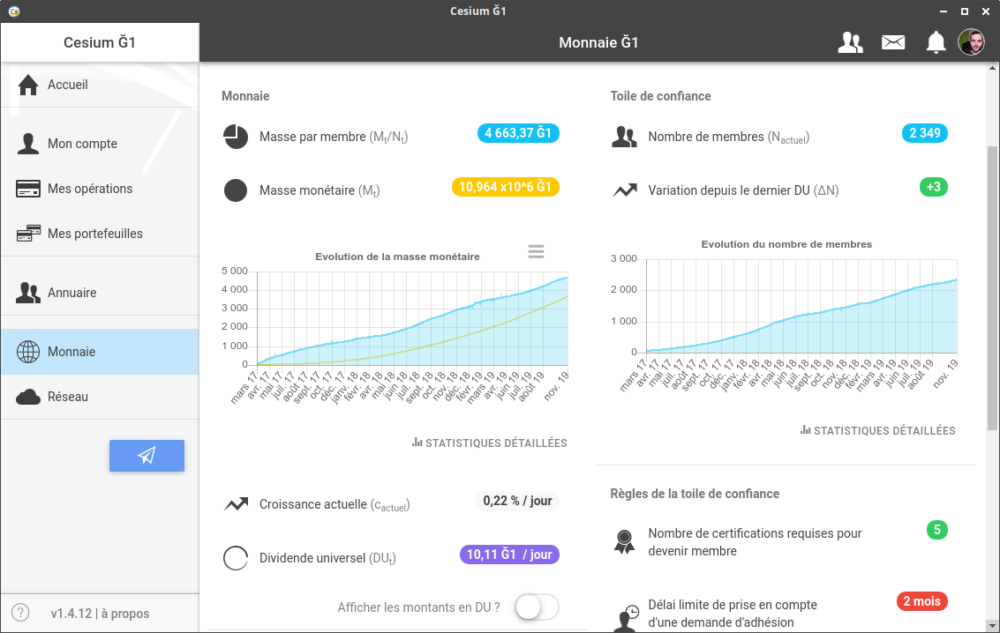

Connaître le montant du DU
L'onglet "Monnaie" vous permet d'avoir accès à toutes les informations disponibles sur la Ğ1.
Vous y trouverez deux types d'informations :
- 1. les paramètres de la monnaie :
- le taux d'augmentation du DU, le nombre de certifications requises, etc.
- 2. des données statistiques :
- nombre de membres, masse monétaire totale, masse moyenne par membre, etc.

Généralement, seules deux données sont réellement susceptibles de vous intéresser :
- la masse moyenne par membre
- (3 315,62 Ğ1 sur la capture ci-dessus), car cette donnée vous permet de vous faire une idée du pouvoir d'achat moyen de chaque membre.
- le montant du DU
- (10,04 Ğ1 / jour sur la capture ci-dessous), car cette donnée vous permet de fixer vos prix en relatif (sur ğchange par exemple).